glasses 26 images
 krea 2
krea 2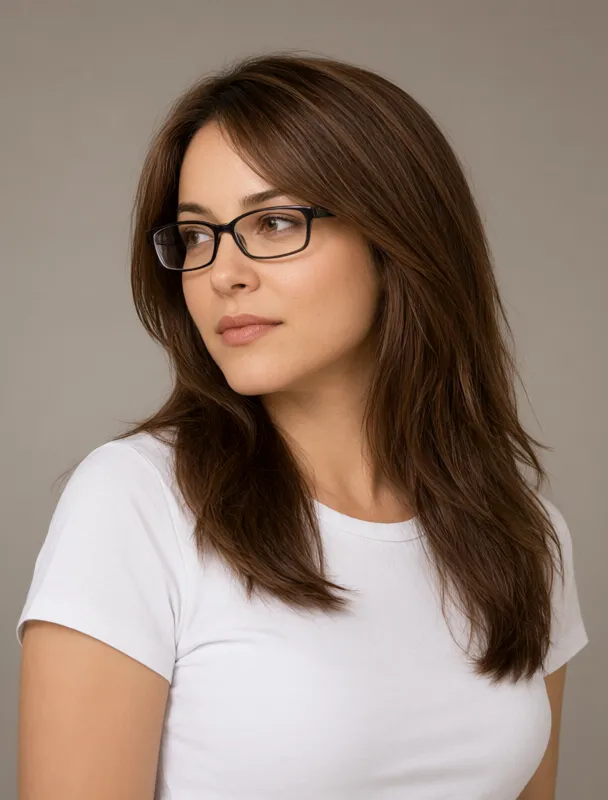
qwen image 2.1rectangular glasses
a full color studio portrait photograph in three-quarter view, framed from the shoulders up, lit by a soft diffused key light against a plain warm gray backdrop. the subject is a mixed race woman of about twenty five with light skin. her eyes are warm hazel. her hair is chestnut brown, long blowout layers. she wears a plain white crew-neck t-shirt. she wears rectangular glasses. she is turned three quarters toward the left side of the frame and gazes off to the left side of the frame, away from the camera.
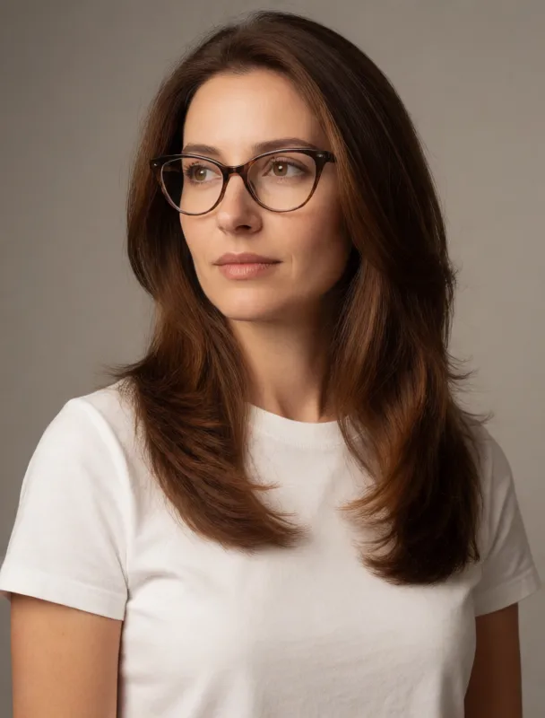
krea 2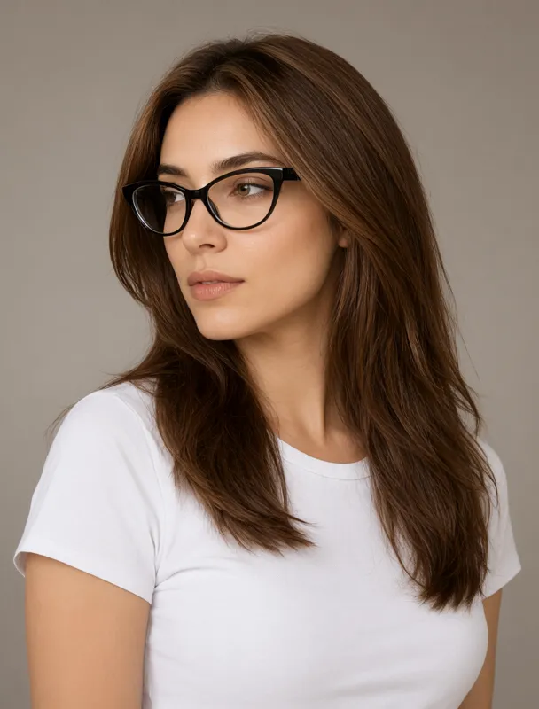
qwen image 2.1cat eye glasses
a full color studio portrait photograph in three-quarter view, framed from the shoulders up, lit by a soft diffused key light against a plain warm gray backdrop. the subject is a mixed race woman of about twenty five with light skin. her eyes are warm hazel. her hair is chestnut brown, long blowout layers. she wears a plain white crew-neck t-shirt. she wears cat-eye glasses. she is turned three quarters toward the left side of the frame and gazes off to the left side of the frame, away from the camera.
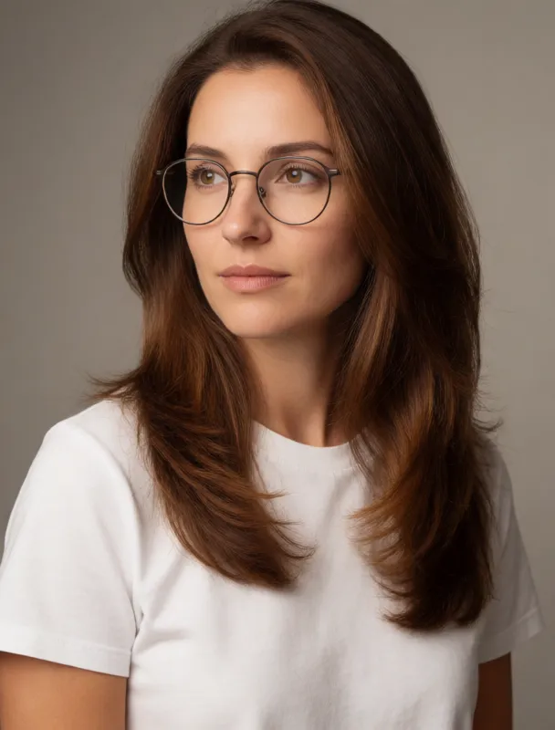
krea 2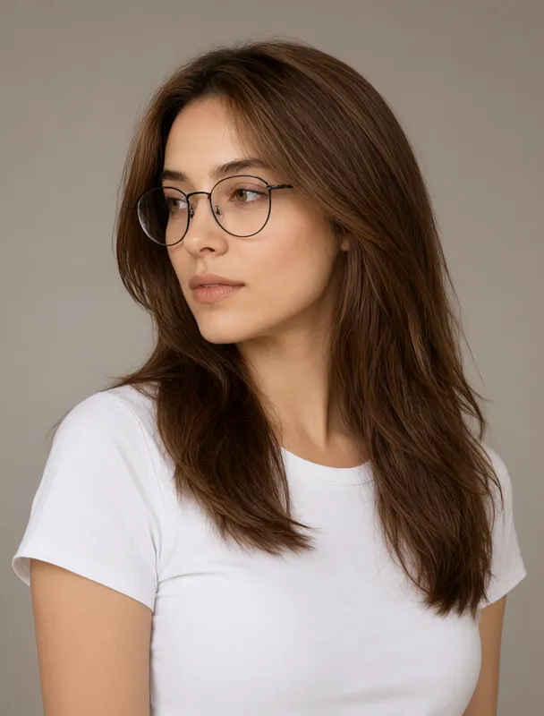
qwen image 2.1round wire rimmed glasses
a full color studio portrait photograph in three-quarter view, framed from the shoulders up, lit by a soft diffused key light against a plain warm gray backdrop. the subject is a mixed race woman of about twenty five with light skin. her eyes are warm hazel. her hair is chestnut brown, long blowout layers. she wears a plain white crew-neck t-shirt. she wears round wire-rimmed glasses. she is turned three quarters toward the left side of the frame and gazes off to the left side of the frame, away from the camera.
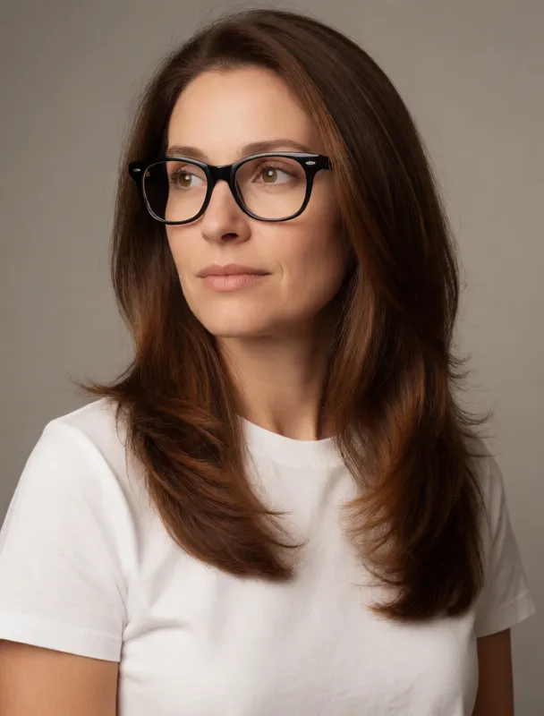
krea 2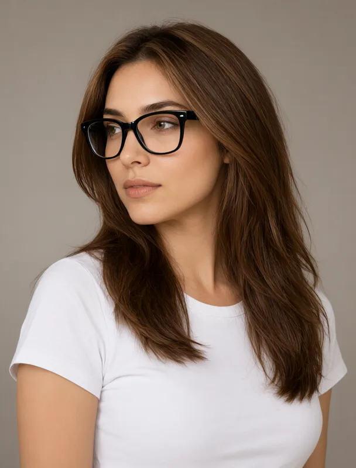
qwen image 2.1thick black frame glasses
a full color studio portrait photograph in three-quarter view, framed from the shoulders up, lit by a soft diffused key light against a plain warm gray backdrop. the subject is a mixed race woman of about twenty five with light skin. her eyes are warm hazel. her hair is chestnut brown, long blowout layers. she wears a plain white crew-neck t-shirt. she wears thick black frame glasses. she is turned three quarters toward the left side of the frame and gazes off to the left side of the frame, away from the camera.
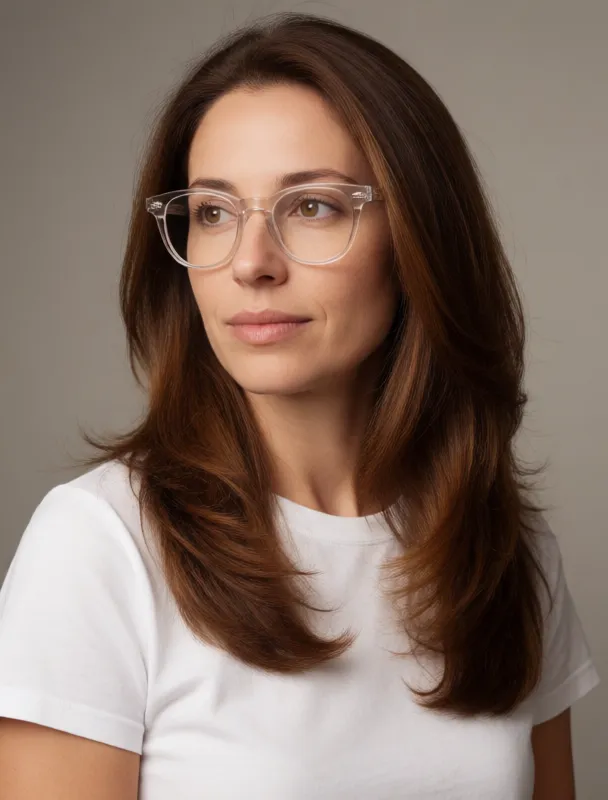
krea 2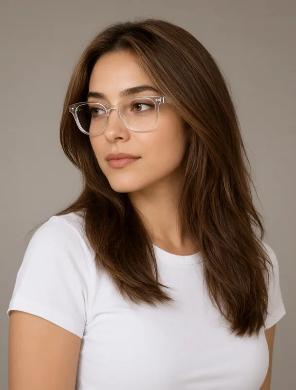
qwen image 2.1clear acetate frame glasses
a full color studio portrait photograph in three-quarter view, framed from the shoulders up, lit by a soft diffused key light against a plain warm gray backdrop. the subject is a mixed race woman of about twenty five with light skin. her eyes are warm hazel. her hair is chestnut brown, long blowout layers. she wears a plain white crew-neck t-shirt. she wears clear acetate frame glasses. she is turned three quarters toward the left side of the frame and gazes off to the left side of the frame, away from the camera.
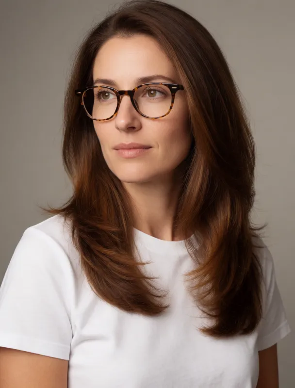
krea 2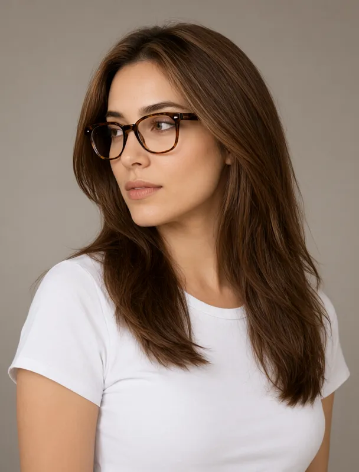
qwen image 2.1tortoiseshell glasses
a full color studio portrait photograph in three-quarter view, framed from the shoulders up, lit by a soft diffused key light against a plain warm gray backdrop. the subject is a mixed race woman of about twenty five with light skin. her eyes are warm hazel. her hair is chestnut brown, long blowout layers. she wears a plain white crew-neck t-shirt. she wears tortoiseshell glasses. she is turned three quarters toward the left side of the frame and gazes off to the left side of the frame, away from the camera.
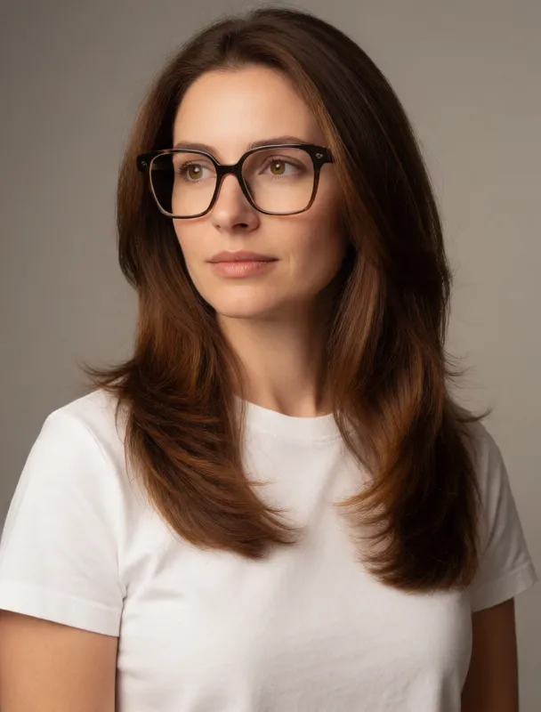
krea 2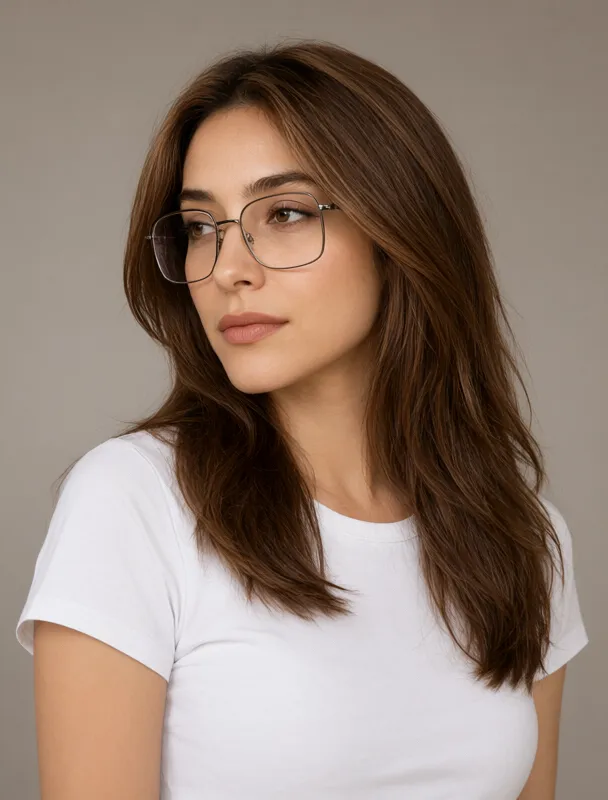
qwen image 2.1oversized square glasses
a full color studio portrait photograph in three-quarter view, framed from the shoulders up, lit by a soft diffused key light against a plain warm gray backdrop. the subject is a mixed race woman of about twenty five with light skin. her eyes are warm hazel. her hair is chestnut brown, long blowout layers. she wears a plain white crew-neck t-shirt. she wears oversized square glasses. she is turned three quarters toward the left side of the frame and gazes off to the left side of the frame, away from the camera.
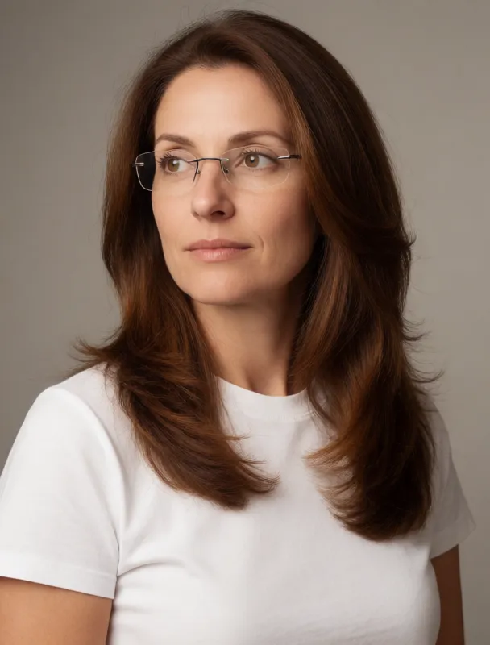
krea 2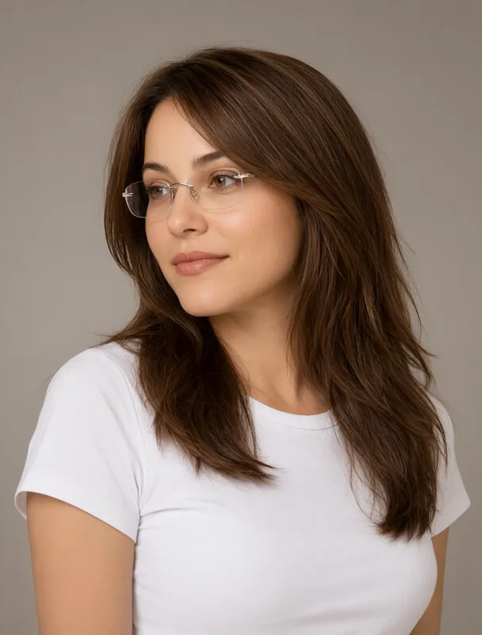
qwen image 2.1rimless glasses
a full color studio portrait photograph in three-quarter view, framed from the shoulders up, lit by a soft diffused key light against a plain warm gray backdrop. the subject is a mixed race woman of about twenty five with light skin. her eyes are warm hazel. her hair is chestnut brown, long blowout layers. she wears a plain white crew-neck t-shirt. she wears rimless glasses. she is turned three quarters toward the left side of the frame and gazes off to the left side of the frame, away from the camera.
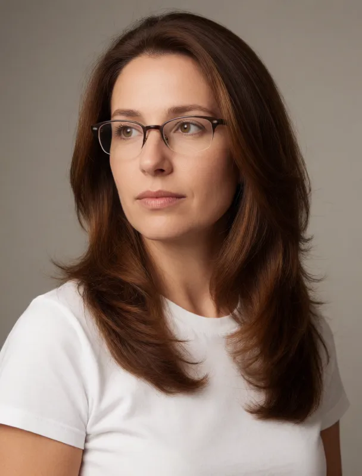
krea 2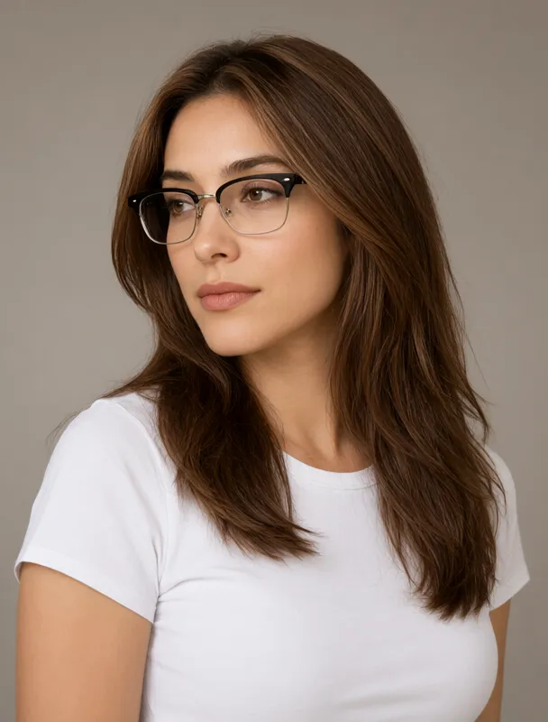
qwen image 2.1half rim browline glasses
a full color studio portrait photograph in three-quarter view, framed from the shoulders up, lit by a soft diffused key light against a plain warm gray backdrop. the subject is a mixed race woman of about twenty five with light skin. her eyes are warm hazel. her hair is chestnut brown, long blowout layers. she wears a plain white crew-neck t-shirt. she wears half-rim browline glasses. she is turned three quarters toward the left side of the frame and gazes off to the left side of the frame, away from the camera.
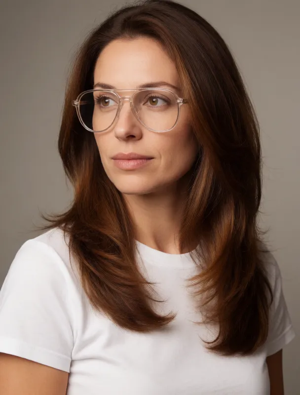
krea 2clear lens aviator glasses
a full color studio portrait photograph in three-quarter view, framed from the shoulders up, lit by a soft diffused key light against a plain warm gray backdrop. the subject is a mixed race woman of about twenty five with light skin. her eyes are warm hazel. her hair is chestnut brown, long blowout layers. she wears a plain white crew-neck t-shirt. she wears clear-lens aviator glasses. she is turned three quarters toward the left side of the frame and gazes off to the left side of the frame, away from the camera.
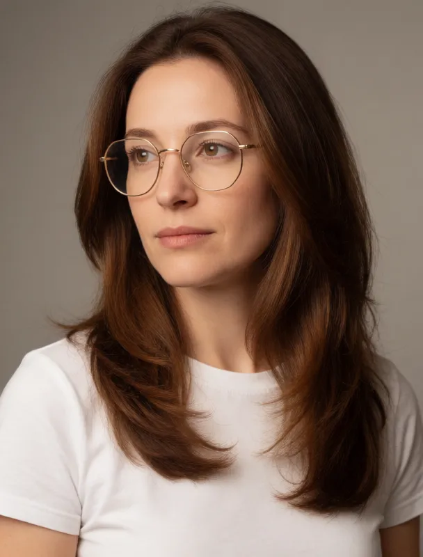
krea 2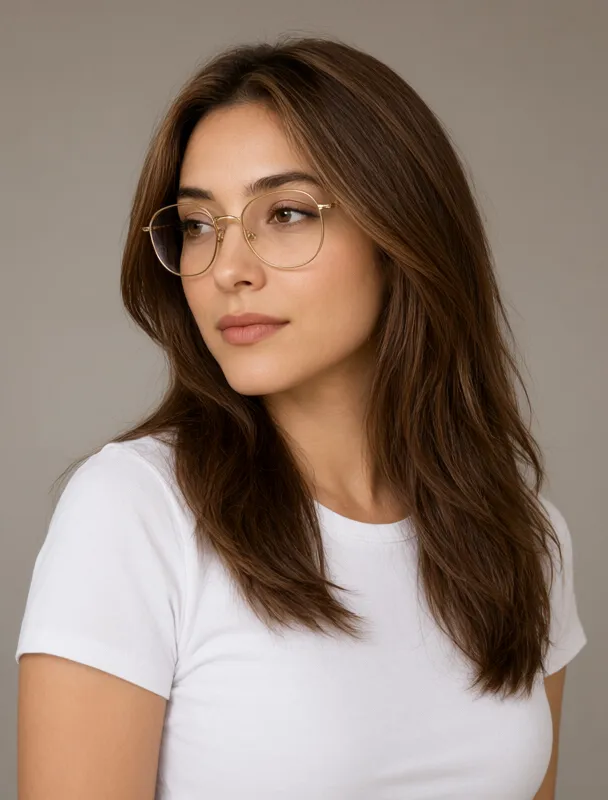
qwen image 2.1gold octagonal wire glasses
a full color studio portrait photograph in three-quarter view, framed from the shoulders up, lit by a soft diffused key light against a plain warm gray backdrop. the subject is a mixed race woman of about twenty five with light skin. her eyes are warm hazel. her hair is chestnut brown, long blowout layers. she wears a plain white crew-neck t-shirt. she wears gold octagonal wire glasses. she is turned three quarters toward the left side of the frame and gazes off to the left side of the frame, away from the camera.
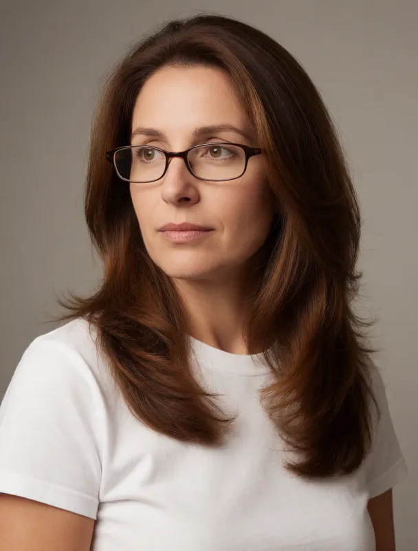
krea 2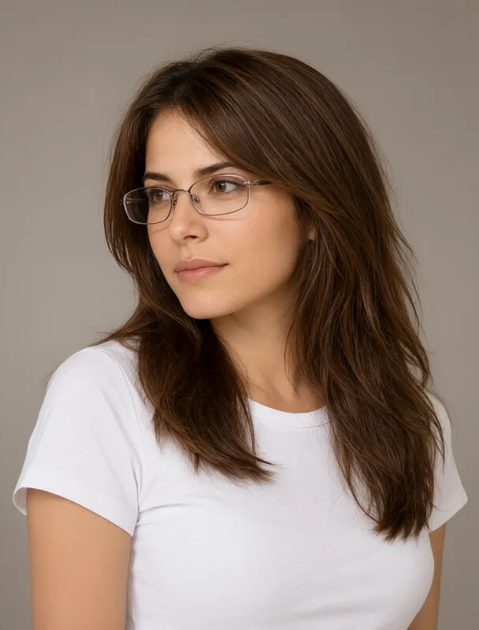
qwen image 2.1reading glasses perched low on her nose
a full color studio portrait photograph in three-quarter view, framed from the shoulders up, lit by a soft diffused key light against a plain warm gray backdrop. the subject is a mixed race woman of about twenty five with light skin. her eyes are warm hazel. her hair is chestnut brown, long blowout layers. she wears a plain white crew-neck t-shirt. she wears reading glasses perched low on her nose. she is turned three quarters toward the left side of the frame and gazes off to the left side of the frame, away from the camera.
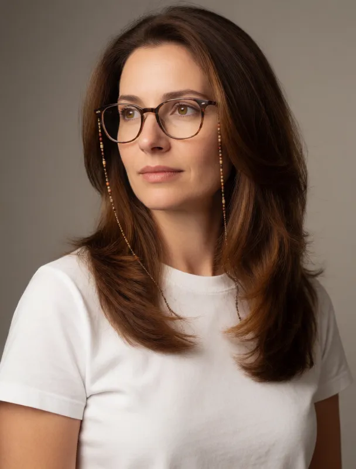
krea 2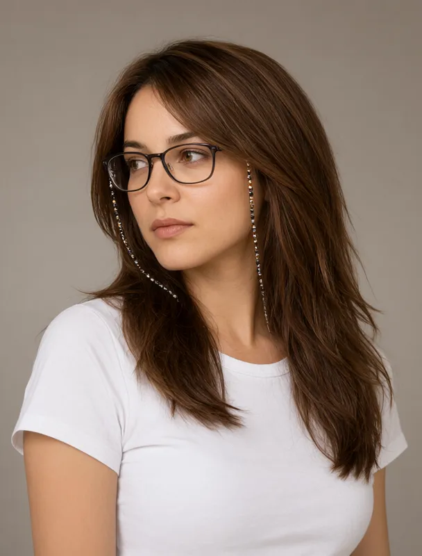
qwen image 2.1glasses on a beaded chain
a full color studio portrait photograph in three-quarter view, framed from the shoulders up, lit by a soft diffused key light against a plain warm gray backdrop. the subject is a mixed race woman of about twenty five with light skin. her eyes are warm hazel. her hair is chestnut brown, long blowout layers. she wears a plain white crew-neck t-shirt. she wears glasses on a beaded chain. she is turned three quarters toward the left side of the frame and gazes off to the left side of the frame, away from the camera.